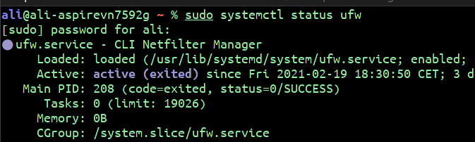

A service (or daemon) is a program that runs in the background outside the interactive control of system users as they lack an interface. This in done to provide even more security, because some of these services are crucial for the operation of the operating system.
In most cases, services can be managed with the command systemctl. You can restart , disable , enable , start and stop the service you want.
An example of some services : bluetooth , dhcpd (DHCP server), sshd (OpenSSH server) ...etc
